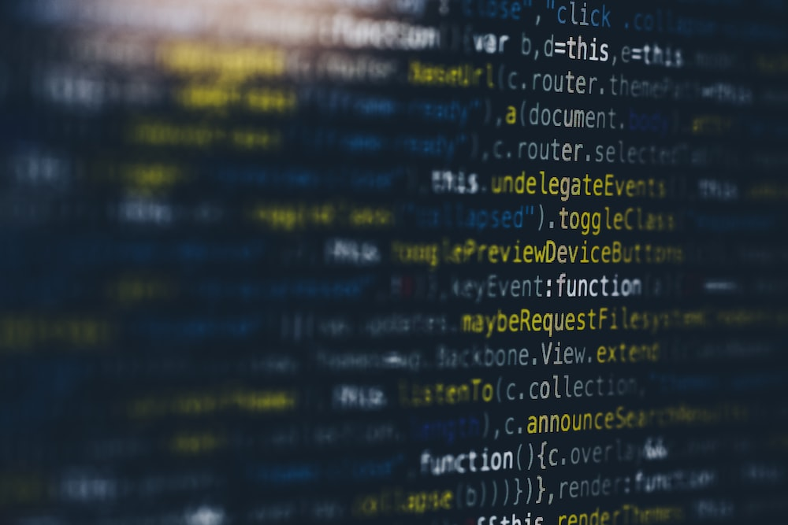

Programming is a collaboration between humans and computers.
Programming is, quite literally, all around us. From the take-out we order, to the movies we stream, code enables everyday actions in our lives. Tech companies are no longer recognizable as just software companies — instead, they bring food to our door, help us get a taxi, influence outcomes in presidential elections, or act as a personal trainer. When you’re walking down the street, where can you find technology in your environment? Click on the white circles.
For many years, only a few people have known how to code. However, that’s starting to change. The number of people learning to code is increasing year by year, with estimates around 31.1 million software developers worldwide, which doesn’t even account for the many OTHER careers that relate to programming. Here at Codecademy, our mission is to make technical knowledge accessible and applicable. Technology plays a crucial role in our economy — but programming is no longer just for software engineers. Any person can benefit from learning to program — whether it’s learning HTML to improve your marketing emails or taking a SQL course to add a dose of analysis to your research role. Even outside of the tech industry, learning to program is essential to participating in the world around you: it affects the products you buy, the legal policies you vote for, and the data you share online. So, let’s dig into what programming is.
.jpg)
Put simply, programming is giving a set of instructions to a computer to execute. If you’ve ever cooked using a recipe before, you can think of yourself as the computer and the recipe’s author as a programmer. The recipe author provides you with a set of instructions which you read and then follow. The more complex the instructions, the more complex the result! How good are you at giving instructions? Try and get Codey to draw a square!

“The problem with programming is not that the computer isn’t logical—the computer is terribly logical, relentlessly literal-minded.” Ellen Ullman, Life in Code When we give instructions to a computer through code, we are, in our own way, communicating with the computer. But since computers are built differently than we are, we have to translate our instructions in a way that computers will understand. Computers interpret instructions in a very literal manner, so we have to be very specific in how we program them. Think about instructing someone to walk. If you start by telling them, “Put your foot in front of yourself,” do they know what a foot is? Or what front means? (and now we understand why it’s taken so long to develop bipedal robots…). In coding, that could mean making sure that small things like punctuation and spelling are correct. Many tears have been shed over a missing semicolon (;) a symbol that a lot of programming languages use to denote the end of a line. But rather than think of this as a boss-employee relationship, it’s more helpful to think about our relationship with computers as a collaboration. The computer is just one (particularly powerful) tool in a long list of tools that humans have used to extend and augment their ability. As mentioned before, computers are very good at certain things and well, not so good at others. But here’s the good news: the things that computers are good at, humans suck at, and the things that computers suck at, humans are good at! Take a look at this handy table: